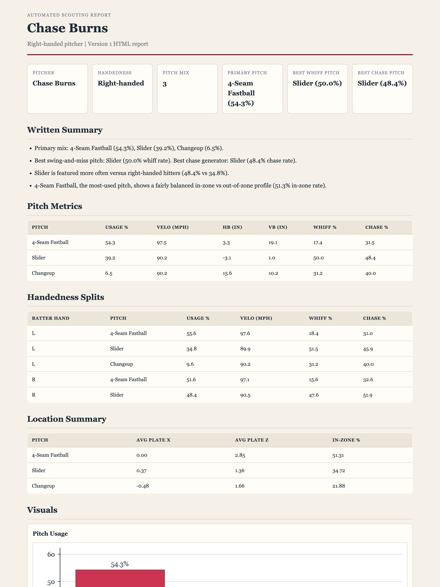

Portfolio Project
Automated Baseball Scouting Reports
A reproducible Python pipeline that turns raw Statcast pitch data into
polished, front-office-style scouting reports — one command, name in,
report out.
Live interactive app
Try it live — build any player's report →
Type a player, pick a date range, get a live report. Free host — the first
load may take ~30s to wake up.
Or view pre-built samples
Pitcher — Chase Burns →
Hitter — Ketel Marte →
What it does
- Pulls pitch-level Statcast data for any player and date range.
- Pitchers: arsenal summary — usage, velocity, spin, movement, whiff & chase rates — plus plate-location and left/right batter splits, with five charts.
- Hitters: batted-ball quality — exit velocity, launch angle, hard-hit%, barrel%, sweet-spot%, and expected stats on contact (xwOBACON/xBACON), split vs LHP/RHP.
- Renders a self-contained HTML report with an auto-written narrative and data tables — one file, opens offline, prints to PDF.
Run it yourself
python scout.py "Chase Burns" --html
python scout.py "Ketel Marte" --hitter
Source, setup, and conventions live on
GitHub.
